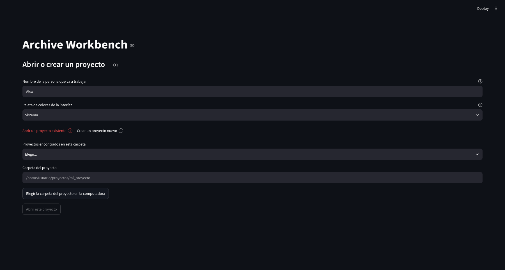
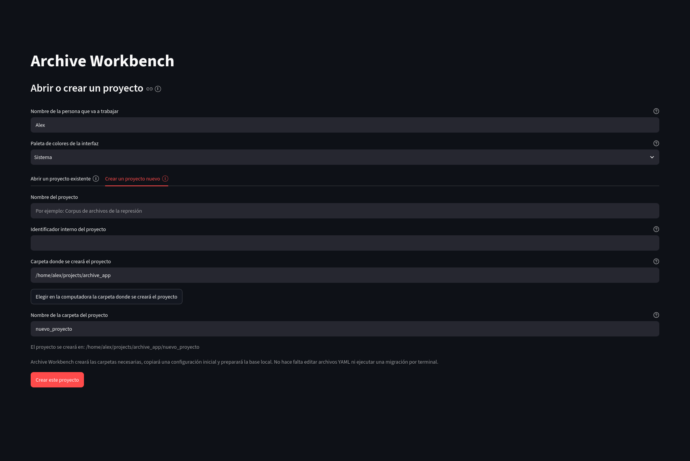

Orientación
Instalación
La forma principal de ejecución usa una imagen preparada de Docker. El sistema anfitrión necesita Docker, pero no necesita instalar Python ni las dependencias internas de Archive Workbench.
Windows
Instalá y abrí Docker Desktop.
Descargá o cloná el repositorio y hacé doble clic en Start Archive Workbench - Windows.bat.
El selector permite elegir una carpeta de proyecto existente o abrir el inicio general. El navegador se abre cuando la aplicación queda lista.
Con una placa NVIDIA compatible y Docker Desktop sobre WSL2 puede usarse Start Archive Workbench - GPU - Windows.bat.
Linux
La ruta CPU necesita Docker Desktop o Docker Engine con Docker Compose. Ejecutá Start Archive Workbench - Linux.sh. Para NVIDIA GPU se necesita además NVIDIA Container Toolkit y se usa Start Archive Workbench - GPU - Linux.sh.
macOS
Instalá y abrí Docker Desktop y ejecutá Start Archive Workbench - macOS.command. La distribución administrada para macOS usa la imagen CPU; la imagen NVIDIA no se ofrece en macOS.
Apertura y creación de proyectos
Al iniciar la distribución administrada puede elegirse directamente una carpeta que ya contenga un proyecto. Si se abre el inicio general, la aplicación muestra las pestañas Abrir un proyecto existente y Crear un proyecto nuevo.
{kind=link}

Abrir captura completa
{kind=link}

Abrir captura completa
Carpeta administrada: ArchiveWorkbenchData/Projects guarda proyectos creados o alojados en el espacio administrado. ArchiveWorkbenchData/Imports/Documents y ArchiveWorkbenchData/Imports/AudioVideo ofrecen ubicaciones de incorporación, y ArchiveWorkbenchData/Settings conserva preferencias y cachés.
CPU y NVIDIA GPU
La imagen CPU funciona sin una placa NVIDIA. La imagen GPU incluye bibliotecas CUDA para tareas que pueden utilizar una placa NVIDIA; el controlador de la GPU sigue perteneciendo al sistema anfitrión y Docker debe poder acceder al dispositivo.
Cierre de la aplicación
En la distribución administrada aparece Cerrar Archive Workbench, que detiene la instancia iniciada por los lanzadores. También se distribuyen archivos Stop Archive Workbench para cada sistema operativo.
Ejecución técnica desde terminal
La instalación editable sigue disponible para desarrollo o diagnóstico. Requiere Python y las dependencias del sistema correspondientes:
git clone https://github.com/alexdcolman/archive-workbench.git
cd archive-workbench
python3 -m venv .venv
source .venv/bin/activate
python -m pip install --upgrade pip
pip install -e ".[dev,extraction,streamlit,semantic,tiff,discovery,audiovisual,platform]"
archive-workbench review-appTambién puede abrirse una carpeta conocida con archive-workbench review-app RUTA_DEL_PROYECTO. El comando archive-workbench init-project RUTA crea una estructura de proyecto desde terminal; --complete-existing completa una carpeta existente sin reemplazar archivos ya presentes.
Migraciones de base: si un proyecto necesita una revisión de base más reciente, primero se crea y verifica una copia de seguridad. db-upgrade no se ejecuta por rutina.